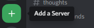
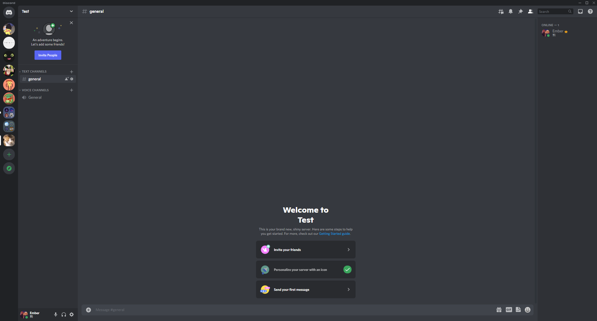
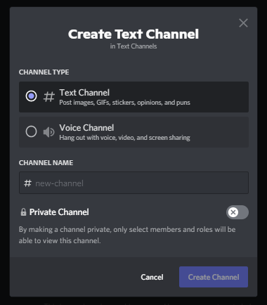

Back
Creating a Server (Guild)
- On the left bar on your screen, navigate to the green plus icon
- You can choose from one of the many templates or create your own. The rest of this page will be reserved for the "Create your own" option
- After the initial creation step your server might look empty.
- 
- Click plus next to the "Text Channels" category on the left side of your screen
- 
- This is creating a text channel in which you have your members talk about specific subjects. As the owner you can create as many as you want for different topics. e.g. Gaming, Homework
- Here's a great video that goes more in depth on server creation